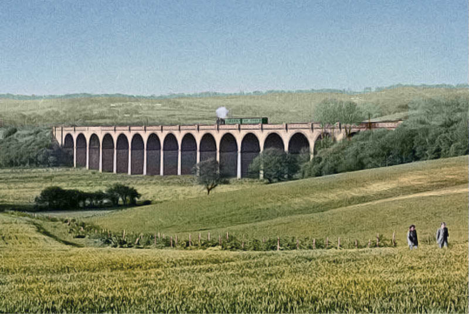
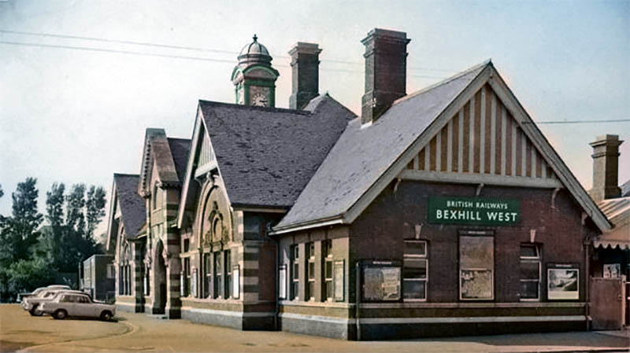
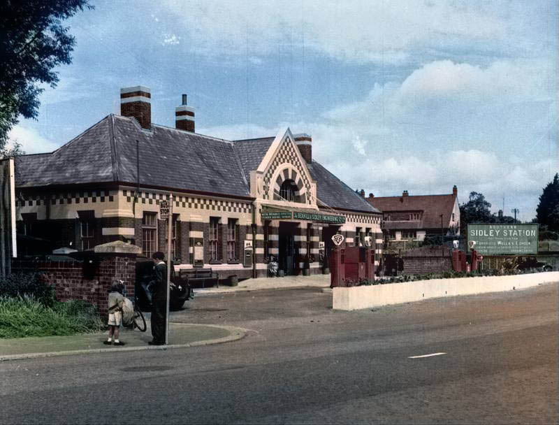
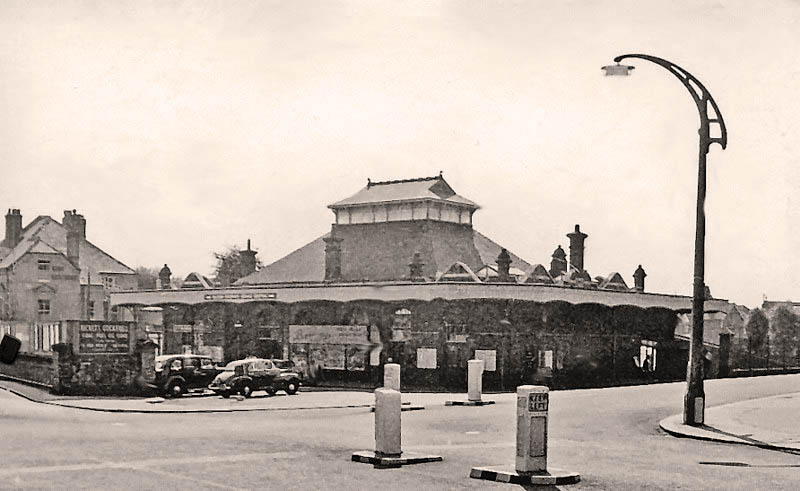
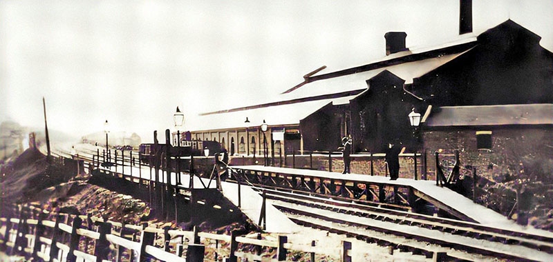

Bexhill West Branch Line
Running from 1902 to 1964 this railway was a branch of the Hastings Line. It ran from Crowhurst to the bottom of what is now known as the Beeching Road Industrial Estate.
Combe Valley Viaduct.
© Bluebell Railway Museum Archive
Bexhill West Station
The terminating point for the West Branch Line, hence the named location of Terminus Road. The main building surives, now as an auction gallery and pub. Across the road where Belmont apartments are today was once the bus depot.
Bexhill West Station, 1962.
© Ben Brooksbank
Sidley Station
Part of the West Branch Line, Sidley Station was located where Elva Way and the BP Service Station stands today.
Sidley Railway Station, c1960.
© Bexhill Museum
Bexhill Railway Station
There have been three separate stations here since 1846; one was located where Sainsbury's carpark is now, the second was on Devonshire Square, and in 1902 they amalgamated to form the station we now have on Sea Road.[8]
Bexhill Railway Station, 1962.
© Ben Brooksbank
Glyne Gap Halt Railway Station
Built in 1905 between stations Bexhill and Hastings, closed ten years later due to competition from the electric tramway. Currently there is a study to see if it is viable to have the station reinstated.
Glyne Gap Halt Railway Station.
© Phil Sellens